量子计算：从直觉到研究入口
面向第一次系统学习量子计算的读者，也面向需要补齐数学、算法、硬件和容错基础的入门研究生。
版本：2026-10-13。带有“会变化”标记的产业与工程信息应结合原始资料重新核验；各条事实保留各自的核验日期。
打开离线排版阅读版：包含公式排版、可检索章节目录、页内导航和已经渲染的流程图。手机上可展开“本页导航”直接找到小节；复杂插图可打开原尺寸查看。整个 reader/ 文件夹可复制到其他电脑后打开；外部参考文献仍需联网访问。
这套文档解决什么问题
量子计算横跨线性代数、概率、量子力学、计算复杂性与工程。很多入门材料只讲“叠加、纠缠、并行”，容易留下三种误解：量子比特等于同时保存两个经典答案；测量能一次读出全部振幅；量子计算机会普遍替代经典计算机。本书从可计算的小例子出发，把直觉、公式和物理限制放在同一条线上。
读完核心章节后，你应该能：
- 用向量、矩阵与张量积描述量子态和量子门；
- 手算 1–3 个量子比特的电路、测量概率与测量后状态；
- 解释干涉为何是算法获得优势的关键，而不是笼统的“量子并行”；
- 逐步分析 Grover、相位估计和 Shor 算法的核心子程序；
- 区分物理量子比特、逻辑量子比特、门保真度、线路深度和应用级资源；
- 理解噪声、量子错误校正和容错开销；
- 对硬件路线、产业里程碑和“量子优势”声明做基本事实核查。
阅读路线
开始前可用七道先修自测与补习路线检查分数、复数、矩阵、张量积、模运算和实验统计；每题都有逐步核对。量子力学基础篇 Q1–Q4从干涉与自旋实验，走到可观测量、薛定谔演化、能级、驱动，以及波函数、势阱和隧穿。它独立成篇，原有 00–19 章的编号和链接保持不变。
数学先学到够用，再进入物理与线路。 第01章放在00总览之后、所有依赖复数/矩阵/张量积的篇章之前。阅读版侧栏和上一章/下一章也遵循这个位置，不再先把Q1–Q4整体列在数学前面。先修自测用于判断哪些小节需要补习；已有基础可以跳过熟悉算例，但不需要先完成Q4的微积分模型才能学量子线路。


图中展示原主篇的主题分组，箭头表示推荐衔接；新增基础篇的插入位置见下方路线。每章的具体先修条件以章节表为准；第 15 章的练习可随学习进度穿插进行。
阅读版的完整默认翻页链为：00 → 01 → Q1 → 02 → Q2 → 03–08 → Q3 → 09–19 → Q4。Q3插在硬件前，Q4标为进阶选读并放在链末；它仍可从量子力学导读提前进入。原章编号表示稳定引用身份，实际学习顺序由目录和先修条件共同给出。
- 零基础主线：按 00 → 01 → Q1 实验与量子态 → 02 → Q2 可观测量与演化 → 03 → 04 → 05 阅读，再进入算法或硬件。
- 硬件物理补充：先读 Q3 能级与驱动，再进入 09、14；需要波函数与模型推导时读 Q4，该章另需一元微积分。
- 计算机背景：可快速浏览 01 的复数部分，但不要跳过张量积、谱分解和复杂度记号。
- 物理背景：可略读态矢量入门，重点补齐可逆计算、oracle、复杂度与资源估算。
- 研究生速查：先做各章的“自检”，不会的题再回读对应段落。
第一次读时，不必把每一页的进阶推导都读完。每章先找出它要回答的具体问题，跟着最小算例把输入、计算、输出写在纸上；遇到“进阶回看”可先跳过。算例能复算之后，再回来读一般公式及适用条件。附录答案保留中间步骤，适合用来定位自己究竟卡在符号、计算，还是对实验结果的解释。
一个可执行的节奏是：读完 00、01、Q1、02 后，独立算出 的两个测量概率，以及 的确定结果；读完 03、04 后，手算一次 Bell 态的测量和传态中的一个条件分支；读完 05、06 后，再比较“成功概率”和“实际门数”分别怎么算。这样每走一步都有可以核对的结果，不必只凭术语判断自己是否学会。
章节
| 章节 | 核心问题 | 先修 |
|---|---|---|
| 00 全景与边界 | 量子计算能做什么、不能做什么？ | 无 |
| 01 数学工具 | 振幅、内积、酉矩阵、张量积怎样算？ | 高中代数 |
| 02 单量子比特 | 状态、相位、Bloch 球、测量是什么？ | 01 |
| 03 多比特与纠缠 | 张量积、纠缠、约化态如何判断与计算？ | 01–02 |
| 04 量子门、电路与协议 | 怎样从矩阵读懂电路？纠缠能完成什么任务？ | 01–03 |
| 05 混态、噪声与量子信道 | 现实设备为何不能只用态矢量描述？ | 01–04 |
| 06 算法的共同骨架 | oracle、干涉、QFT、相位估计如何连接？ | 01–05 |
| 07 代表性量子算法 | 搜索、因数分解、模拟为何可能加速？ | 06 |
| 08 应用、变分算法与证据 | NISQ 应用怎样评估，哪些说法证据不足？ | 05–07 |
| 09 硬件与控制栈 | 不同物理路线在优化什么？ | 02–05 |
| 10 错误校正与容错 | 不复制未知态，怎样纠错？ | 03–05 |
| 11 资源估算与基准 | “1000 个量子比特”为什么不是完整指标？ | 07、09–10 |
| 12 安全、网络与研究前沿 | Shor、PQC、QKD、量子网络是什么关系？ | 04、07、10 |
| 13 量子信息量度 | 熵、迹距离、保真度、互信息与 Holevo 界怎样计算？ | 03、05 |
| 14 编译、调度与控制 | 抽象电路怎样变成原生门、时序和物理控制？ | 04、05、09 |
| 15 实践与论文复核 | 怎样从手算走到模拟、真机实验和可复现研究？ | 01–14 按需 |
| 16 高级算法与验证 | 怎样理解查询下界、量子行走、QSVT 与可扩展验证？ | 06–08、13 |
| 17 量子计算模型 | 门、测量型、绝热、退火、模拟与数字—模拟混合模型怎样比较？ | 04、07、09、14 |
| 18 信道、容量与验证复杂度 | 怎样从信道表示走到容量、假设检验、证明系统和连续变量？ | 03、05、07、13；连续变量另需 09 |
| 19 可维护量子系统工程 | 处理器怎样从一次实验走向可扩展、可校准、可运维的系统？ | 09–11、14 |
附录：先修自测 · 符号表 · 术语表 · 练习与答案 · 参考资料与证据等级 · 审校记录
从问题找到可手算的例子
下面这些算例适合在读完相应先修内容后独立复算。先写自己的中间步骤，再对照正文；只记住最终数字，往往发现不了位序、分母和条件是否用错。
| 想弄清的问题 | 可从哪里开始 |
|---|---|
| 装置记录路径但没人读取，为什么仍会影响干涉？ | Q1：两路径振幅、记录条件与输出概率 |
| 不确定关系到底约束什么，量子门怎样由能量产生？ | Q2：Pauli 算例、Robertson 推导与矩阵指数 |
| 10 MHz 的驱动为什么不是 10 ns 的翻转？ | Q3：角频率、旋转坐标系、Rabi 振荡与失谐 |
| 势阱能级为什么离散，隧穿概率怎样求？ | Q4：边界条件、归一化、势垒匹配与数值例子 |
| 复数振幅怎样变成概率，怎样归一化？ | 第 01 章： 的归一化与正半定矩阵反例 |
| 为什么相同的 0/1 概率，不代表同一个量子态？ | 第 02 章： 如何把相位差变成确定输出 |
| 为什么一次周期测量不等于找到了因子？ | 第 07 章：从分解 15 到 35 的非整齐相位读数与连分数 |
| 为什么窃听模型的错误率会出现两个百分数？ | 第 12 章第 3.1 节：保留数与发送数的分母区别 |
| 为什么平均等待时间不足以预测平均剩余相干性？ | 第 12 章第 6.2 节：先平均再取指数与逐次取指数再平均 |
| 信息上界是否就是一次测量真正取得的信息？ | 第 13 章：同一对非正交态的 bit 上界与 bit 可访问信息 |
| Bell 见证的点估计超过 ，就足以宣称纠缠吗？ | 第 15 章：三组原始计数、抽样误差界与保守下界，附可复算图 |
配套实验、源码与声音
配套逐章实验路线、基础、算法、系统及统计实验册，每组有手算步骤、答案和可运行代码。五个声音样本把相位和对比度变化映射到经典声音；工业与开源对照区分教学程序、源码摘录和完整外部项目。
统一约定
- 计算基按顺序写成 ；两比特基按 。
- 多比特字符串中，左边是高位。例如本书把四维列向量的第 3 个分量对应到 。若软件把编号较小的量子比特显示在字符串右端，必须同时写出“线路上的量子比特编号”和“显示字符串的位序”，不能只贴一个
10。 - 对纯态采用列向量；门从右向左作用： 表示先做 ，再做 。
- 对测量分别说明结果概率、已知结果时的条件后态，以及忽略结果时的非选择后态。
- 退极化、退相位等信道的参数在不同资料中未必同义；每次使用都写出信道公式，不仅写参数名。
- 默认底数为 2；若底数影响结论，会明确写出。
- “量子优势”仅指在明确任务、误差容忍和资源口径下优于已知经典方法，不等于通用加速。
- 每个重要结论尽量标注证据类型：定理、受控实验、数值模拟、工程报告或展望。
怎样核查一句“量子突破”新闻
依次问五个问题：任务是否实用；输出是否验证；经典基线是否为当时最强；比较是否包含数据装载、纠错、重复采样与能耗；结果是同行评审论文、预印本还是公司路线图。只要其中两项不清楚，就不应把它改写成“量子计算机已解决某行业问题”。
2026-10-13修订保留24篇正文的现有架构，把新推导和诊断放回相关小节；第三组逐章练习覆盖24篇，另有工业工作流的6组源码/计算练习。原251道自检题及既有实验继续保留。新增研究补齐qubitization信号条件、联合错误/擦除、测量后态、噪声顺序、有限预算与统计判据等边界；第三方固定摘录扩充至26项目97文件。入口见第三组逐章练习与工业工作流细算，实际审查、运行与未复现范围见本轮记录。